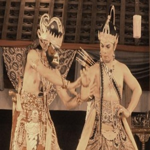

Tari Kendalen Tari Tradisional Jawa Tengah
Kategori: Tarian

Tari Kendalen merupakan seni tari yang berasal dari Semarang, Jawa Tengah. Kesenian ini berupa tarian yang menggunakan kuda dari bambu atau kuda lumping. Biasanya tari kendalen ini dibawakan oleh 14 orang penari pria yang membawakan dua babak yaitu babak Bendrong dan babak Umbaran.
Dalam pertunjukan ini setiap babak terdapat pembukaan, inti penyajian tari dan penutup. Tarian ini juga diiringi oleh gamelan yang akan memainkan nyanyian serta gendhing-gendhing Jawa. Tarian biasanya ditampilkan pada acara tertentu seperti khitanan, perkawinan, festival dan lain sebagainya.
Untuk mengenal uniknya tari Kendalen dan sosok prajurit gagah berani ini kita perlu mengetahui asal-usul sejarahnya. Tari Kendalen dan tari Prajuritan ini latar belakangnya tidak bisa dipisahkan dari kisah Pangeran Sambernyawa atau yang dikenal dengan Mangkunegara I.
Pada saat itu Pangeran Sambernyawa bersama para prajuritnya gigih melakukan perlawanan terhadap tentara Belanda yang menjajah Indonesia. Maka dari itu tari Prajuritan yang banyak berkembang di masyarakat menggambarkan derap langkah prajurit Pangeran Sambernyawa pada waktu melaksanakan tugas dan kewajiban mereka sebagai seorang prajurit.
Awal mula munculnya tari Prajuritan ini adalah ketika Pangeran Sambernyawa melakukan sebuah perundingan dengan Belanda. Lalu, para prajurit berlatih secara diam-diam sambil melindungi Pangeran Sambernyawa sekaligus membuat pertunjukan yang berhasil menarik perhatian masyarakat pada saat itu untuk menonton. Setelah itu munculah tari Prajuritan yang berkembang luas di masyarakat hingga saat ini.
Begitulah sejarah yang berkembang tentang uniknya tari Kendalen dan sosok prajurit gagah berani ini. Tari Kendalen dan tari Prajuritan merupakan salah satu contoh kesenian tradisional yang patut kita jaga dan lestarikan.
Saat ini tari Kendalen dan tari Prajuritan ini sudah mulai di ajarkan untuk kegiatan ekstrakulikuler di sejumlah sekolah tingkat SD, SMP, dan SMA di Semarang dan sekitarnya. Tujuannya adalah untuk meningkatkan semangat generasi muda dalam melestarikan kesenian tradisional yang mulai dilupakan keberadaannya serta untuk meregenerasi seniman-seniman dalam seni tradisional di masa mendatang.
Selain untuk diajarkan pada kegiatan ekstrakulikuler di sekolah-sekolah, seharusnya pemerintah lebih meningkatkan event atau festival yang berkaitan dengan kesenian tradisional terutama mengenalkan uniknya tari Kendalen dan sosok prajurit gagah berani ini. Hal ini dapat bertujuan untuk meningkatkan daya tarik atau minat masyarakat terhadap seni tradisional dan juga agar semakin menarik wisatawan untuk mengunjungi daerah tersebut.
Sebagai warga yang baik ada baiknya jika membantu melestarikan budaya yang sudah mulai dilupakan tersebut. Perlu diingat bahwa kesenian tradisional merupakan suatu identitas, aset berharga dan harga diri bangsa yang wajib kita lindungi agar tidak ada lagi kasus-kasus mengklaim budaya oleh negara lain tidak terjadi lagi.
https://www.lensabudaya.com/